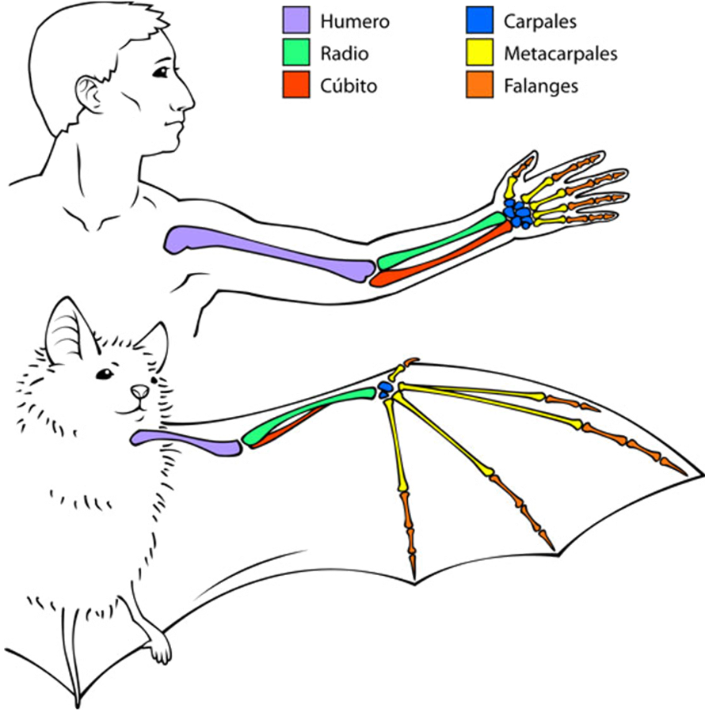
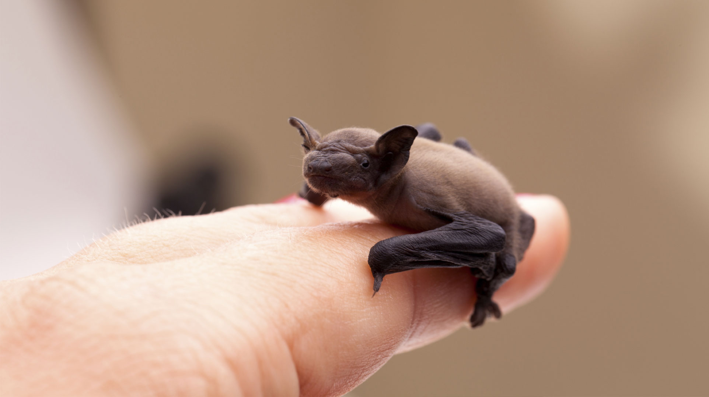
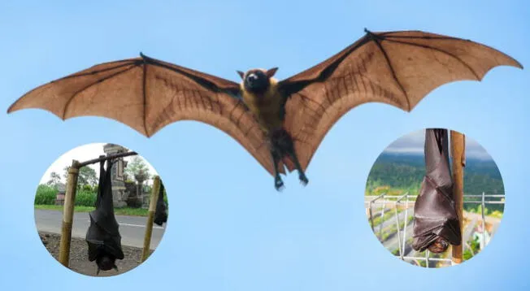
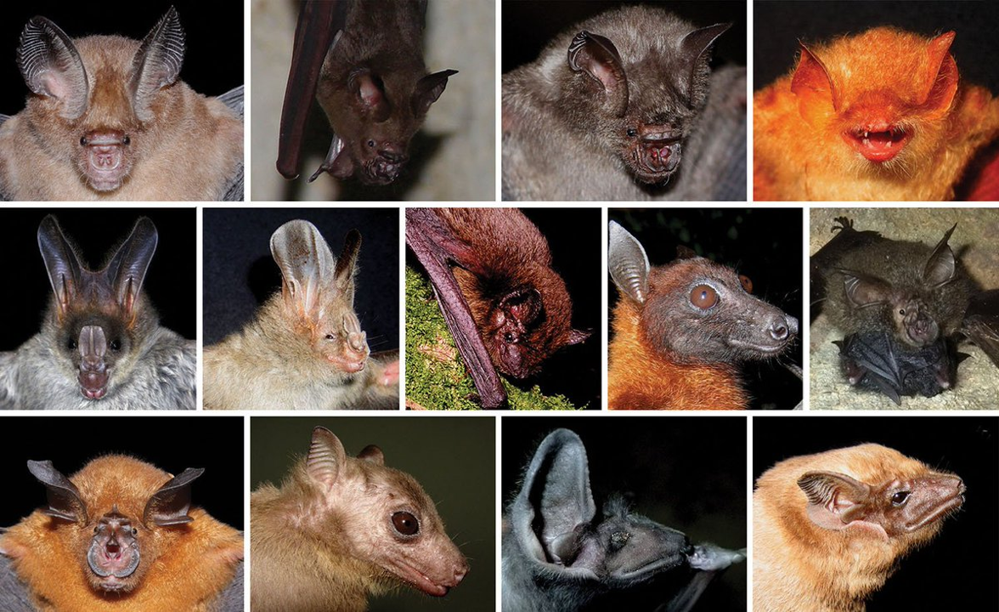

¿Piensas que los murciélagos son peligrosos?
Lo que pensamos sobre los seres vivos depende en mucha medida de lo que piensa nuestro círculo más
cercano sobre ellos. Si en nuestra familia le tienen miedo a los murciélagos es muy probables que
nosotros también, aunque esta percepción no se base precisamente en hechos.
En realidad, los murciélagos son un ser vivo mágnifico que no es peligroso y, al contrario,
proporciona muchos beneficios a los ecosistemas y al ser humano.
¡Te invito a conocerlos por tu propia cuenta!
Los murciélagos son animales mamíferos pertenecientes al orden Chiroptera, que viene del griego Kheirós (mano) y ptéron (ala), es decir "animales con alas en las manos". Lo cual, podemos observar comparando las manos humanas con las de un murciélago; los metacarpos y las falanges de los murciélagos se ven mucho más alargados. Eso, junto con la membrana que cubre sus dedos y brazo (llamada patagio), conforman el ala que les permite volar y ser los únicos mamíferos capaces de hacerlo.
Existe una gran variedad de estos magníficos mamíferos. Actualmente se conocen 1400 especies a nivel mundial. Su tamaño puede ir de 3 cm (como el murciélago abejorro) a 34 cm de largo, como los zorros voladores, que pueden alcanzar tamaños de 2 metros de ala a ala, y son endémicos de Filipinas.
 La diversidad física de los murciélagos la encontramos en sus rostros. El tamaño de sus orejas y ojos es muy variable. Algunas especies tienen una nariz prominente y una trompa alargada en comparación con su cabeza (como las especies nectarívoras). También podemos encontrar diferentes coloraciones entre cafés, negros, grises, naranjas, rojizos y hasta blancos.
